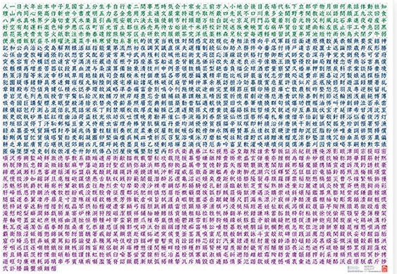

Kanji
漢字

漢字
Kanji originally came from China to Japan. The term “kanji” literally means “Han characters” or “Chinese characters” and it is identical to the characters in China to describe their writing.
Kanji are mainly used to describe names and nouns. When used in verbs and adjectives they mostly are written in combination with hiragana. Most sentences include kanji as well as hiragana.
Japanese dictionaries list around 10,000 kanji. The Japanese government limited the kanji used in official publications to the 1945 touyou kanji with about 4000 readings. The Japanese Language Proficiency Test (JLPT) is based on these 1945 touyou kanji.
A Japanese with average education knows around 3000 kanji and it is estimated that around 4000 kanji are used in Japanese literature.
Because of the way they have been adopted into Japanese, a single kanji may be used to write one or more different words—or, in some cases, morphemes—and thus the same character may be pronounced in different ways
Nevertheless, some cases are ambiguous and require a furigana[Furigana is a Japanese reading aid uses Hiragana to write kanji readings] gloss, which are used to simplify difficult readings or to specify a non-standard reading.
Kanji readings are categorized as either on'yomi (音読み, literally "sound reading", from Chinese) or kun'yomi (訓読み, literally "meaning reading", native Japanese), and most characters have at least two readings, at least one of each.
The on'yomi (音読み, [oɰ̃jomi], lit. "sound(-based) reading"), the Sino-Japanese reading, is the modern descendant of the Japanese approximation of the base Chinese pronunciation of the character at the time it was introduced. It was often previously referred to as translation reading, as it was recreated readings of the Chinese pronunciation but was not the Chinese pronunciation or reading itself, similar to the English pronunciation of Latin loanwords ways
The kun'yomi (訓読み, [kɯɰ̃jomi], lit. "meaning reading"), the native reading, is a reading based on the pronunciation of a native Japanese word, or yamato kotoba, that closely approximated the meaning of the Chinese character when it was introduced. As with on'yomi, there can be multiple kun'yomi for the same kanji, and some kanji have no kun'yomi at all.
For instance, the character for east, 東, has the on'yomi tō, from Middle Chinese tung. However, Japanese already had two words for "east": higashi and azuma. Thus the kanji 東 had the latter readings added as kun'yomi. In contrast, the kanji 寸, denoting a Chinese unit of measurement (about 30 mm or 1.2 inch), has no native Japanese equivalent; it only has an on'yomi, sun, with no native kun'yomi. Most kokuji, Japanese-created Chinese characters, only have kun'yomi, although some have back-formed a pseudo-on'yomi by analogy with similar characters, such as 働 dō, from 動 dō, and there are even some, such as 腺 sen "gland", that have only an on'yomi.